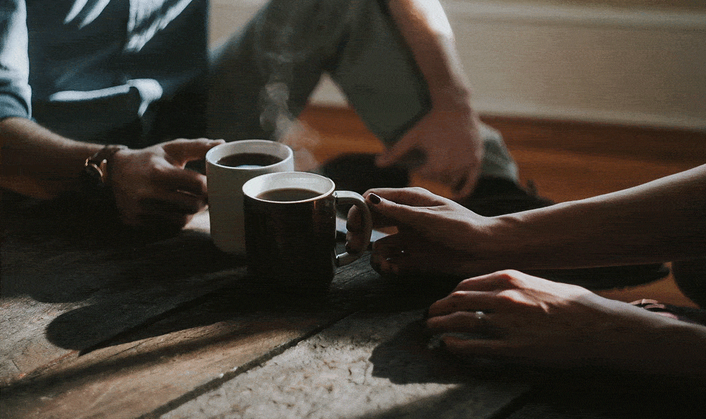

To help your conversation go as smooth as possible, we put together a list of 21 questions to ask on your first coffee date!

-
What’s awesome in your life right now?
- What’s your go-to karaoke song?
- What did you think you were going to be growing up?
- What’s the most rebellious thing you did growing up?
- What’s the strangest compliment you’ve ever gotten?
- Are you a risk taker or someone who likes to play it safe?
- If you could only watch one genre of movies for the rest of your life, what would it be?
- Dog person, cat person, or neither?
- What’s your guilty pleasure?
-
Do you have any hidden talents or surprising hobbies?
-
What makes you smile without fail?
-
What is your go-to comfort food?
-
What’s the best piece of advice you’ve ever received, and why is it stuck with you?
-
Where would you live if you had no ties to any specific place?
-
What’s the coolest/best/funniest/worst/what have you done thing that’s happened to you lately?
-
What were you like in high school?
-
If you could meet anyone dead or alive, who would it be and why?
-
What made you decide to study [insert college major]?
-
If you could switch careers, without any concern for money, what would you do?
-
What’s your favorite thing to do around here on the weekends?
-
If you could fly anywhere, for free, where would you go?